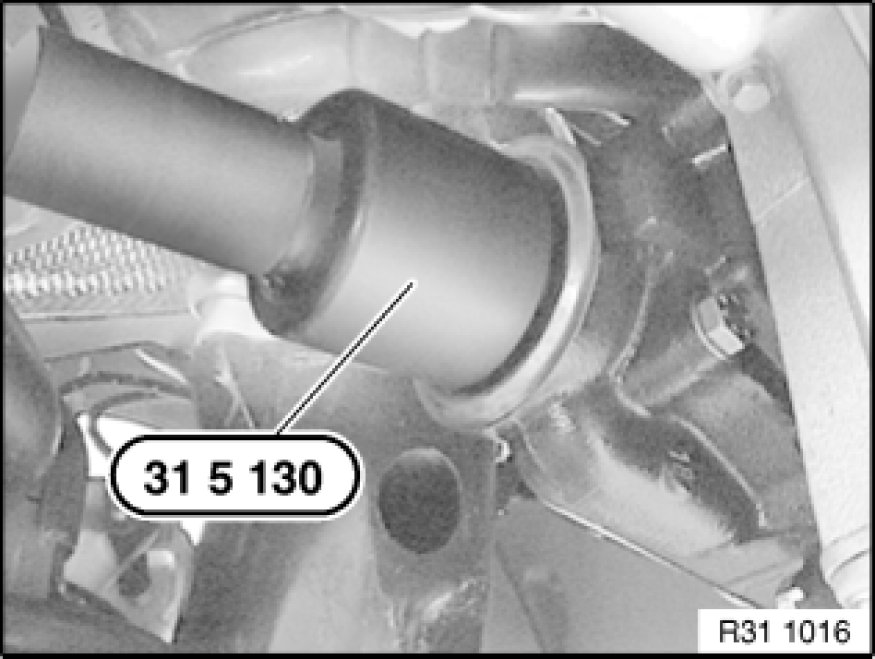

Replacing Radial Seal for Drive Flange of Front Differential
31 51 010 - Replacing radial seal for drive flange of front differential

Special tools required:
- 23 0 020 23 0 020 Holder
- 31 5 130 31 5 130 Set of Impact Drifts
- 33 1 150 33 1 150 Fixture

Necessary preliminary tasks:
- Remove reinforcement plate Service and Repair
- Remove front propeller shaft
Mark position of nut with respect to shaft with punch marks (arrow).
Lever out lockplate (1) with a suitable tool.
Important!
Risk of damage!
Do not place special tool on threaded holes of drive flange.
Secure drive flange with special tool 23 0 020 23 0 020 Holder against turning and release nut (1).
Important!
Risk of damage!
Mount special tool only with longer screws (M10x30) on drive flange.
Pull drive flange off drive shaft with special tool 33 1 150 33 1 150 Fixture.
Lever shaft seal (1) out of front differential with a suitable screwdriver (2).

Installation:
Drive in shaft seal with special tool 31 5 130 31 5 130 Set of Impact Drifts as far as it will go.
Coat sealing lips of new shaft seal (1) with front differential oil.
Important!
Risk of damage!
Do not tighten nut beyond punch marks. Otherwise the clamping sleeve will be damaged.
Clean drive flange and attach.
Tighten down nut until punch marks on nut and shaft are aligned.
Install new lockplate (1).
After installation:
- Check front differential oil level Changing Front Differential Oil, correct if necessary